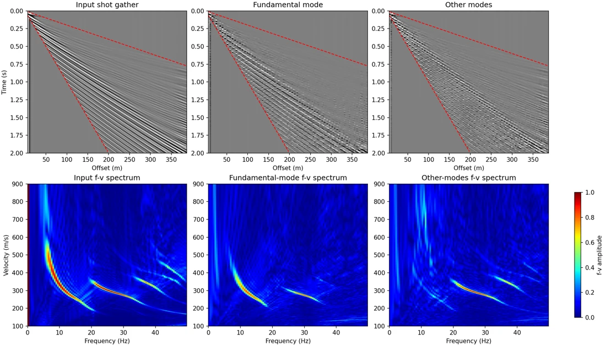
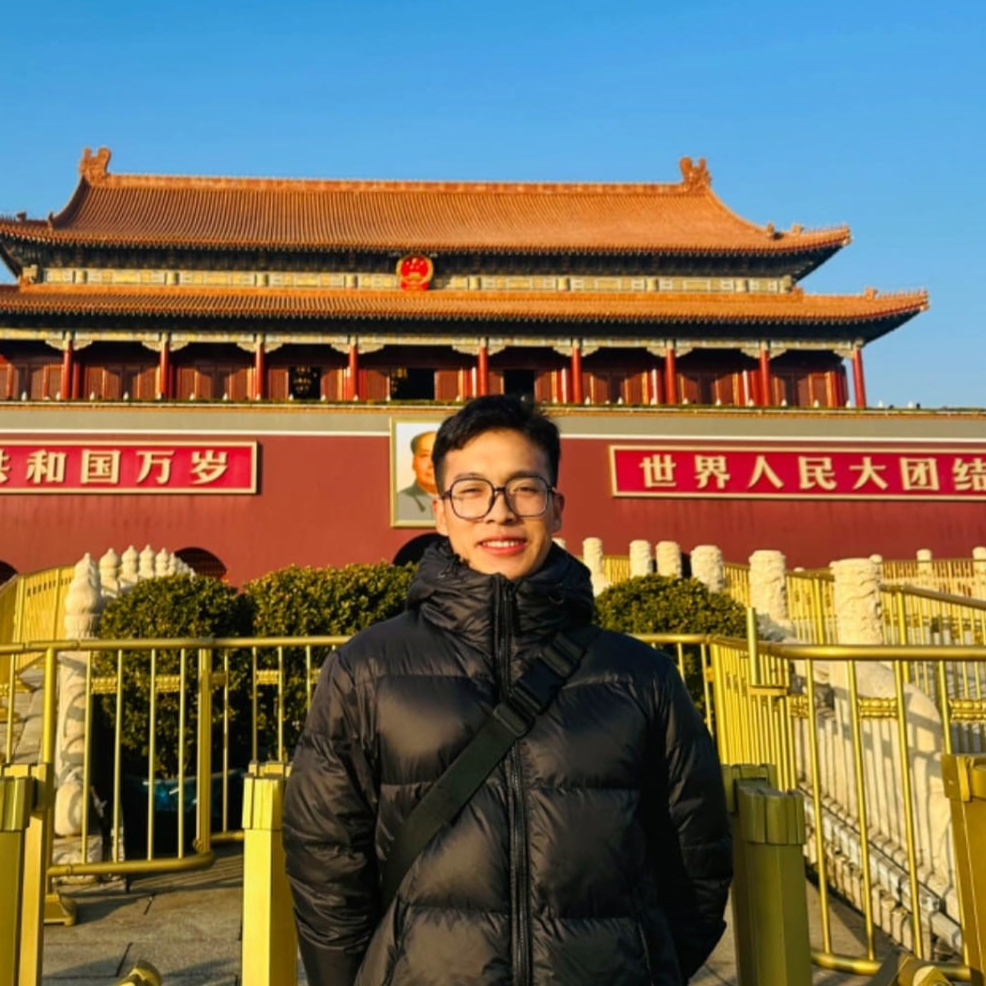

Geophysics & Scientific Machine Learning
Yang Cui
Ph.D. Student in Geophysics Uppsala University
Scientific Machine Learning for Seismic Data
Surface Wave, Neural Operator, Seismic Data Processing, Deep Learning, Full Waveform Inversion

About Me
I am a Ph.D. Student in Geophysics at Uppsala University, Sweden, supervised by Dr. Myrto Papadopoulou and Dr. Ayse Kaslilar Sisman.
I received my M.Sc. in Geophysics from King Fahd University of Petroleum & Minerals (KFUPM), supervised by Dr. Umair bin Waheed and Dr. Yangkang Chen, and my B.Eng. in Exploration Technology and Engineering from Yangtze University.
Selected Research
Bridging the gap between physics and DL for seismic.


News
- 2026 Oct: We finihsed the whole week field course on seismic, gravity, ERT and magnitude in Bergby, Sweden.
- 2026 Aug: I gave oral and poster presentations on our recent deep learning software at SERC General Assembly, Stockholm, Sweden.
- 2026 Aug: We will present our IMAGE bastract on physics-aware deep learning as oral in Houston, Texas, USA.
- 2026 Jul: Our new preprint, “Dispersion-Guided Physics-Aware Deep Inverse Operator for Surface Wave Mode Separation” , is now available online.
- 2026 Jun: I attended the EAGE Annual Conference, where I gave four oral presentations on physics-aware deep learning and neural operators.
Earlier news
- 2026 May: Won 3rd place at the 10th SEG Europe Virtual Student Conference.
- 2026 Mar: Started my Ph.D. in Geophysics at Uppsala University.
- 2026 Jan: Graduated from KFUPM with an M.S. in Geophysics.
- 2025 Jun: Gave three oral presentations at the EAGE Annual Conference in Toulouse, France.
- 2025 Feb: Selected as a finalist in the KFUPM Machine Learning Competition.
Open-source Software
Code and notebooks for reproducing and building on my research.
SeisReconNO
A U-Net-enhanced Fourier neural operator for 3D seismic reconstruction, with training and comparison notebooks.
Unsupervised DAS Denoising
Reproducible material for DAS-VSP denoising with attention-based deep image prior.
FNO Eikonal Solver
Notebooks exploring Fourier neural operators for solving the Eikonal equation.
Publications
Download publication bibliography
Preprints
- arXivCui, Yang, Swaminadhan, S., Chen, Y., Schiffer, C., & Papadopoulou M. Dispersion-Guided Physics-Aware Deep Inverse Operator for Surface Wave Mode Separation. arXiv preprint arXiv:2607.12808 (2026).
- arXivCui, Yang, Anikiev, D., Waheed, U. B. & Chen, Y. Learning from Imperfect Labels: A Physics-Aware Neural Operator with Application to DAS Data Denoising. arXiv preprint arXiv:2511.15638 (2025).
- arXivZhao, J., Waheed, U. B., Sun, J., Cui, Yang, Savva, N. & Verschuur, E. Parameter-Efficient Adaptation of Pre-Trained Vision Foundation Models for Active and Passive Seismic Data Denoising. arXiv preprint arXiv:2605.10953 (2026).
Journal Articles — First Author
- GJICui, Yang, Bai, M., Wu, J. & Chen, Y. Earthquake signal detection using a multiscale feature fusion network with hybrid attention mechanism. Geophysical Journal International 240, 988-1008 (2025).
- TGRSCui, Yang, Waheed, U. B. & Chen, Y. Unsupervised deep learning for DAS-VSP denoising using attention-based deep image prior. IEEE Transactions on Geoscience and Remote Sensing 63, 1-14 (2025).
- TGRSCui, Yang, Bai, M., Zhou, Z. & Chen, Y. One-dimensional dictionary learning with variational sparse representation for single-channel seismic denoising. IEEE Transactions on Geoscience and Remote Sensing 62, 1-13 (2024).
- GeophysicsCui, Yang, Wu, J., Bai, M. & Chen, Y. Ground-truth-free deep learning for 3D seismic denoising and reconstruction with channel attention mechanism. Geophysics 89, V503-V520 (2024).
Journal Articles — Co-Author
- Sci RepAl-Qadasi, B., Cui, Yang, Waheed, U. B. & Wang, H. F. A novel deep-learning model to convert DAS strain to geophone particle velocity: application to PoroTomo data from the Brady geothermal field. Scientific Reports (2026).
- AIGTraversa, A., Cui, Yang†, Waheed, U. B. & Chen, Y. SeisReconNO: Leveraging a U-Net-Enhanced Fourier neural operator for 3D seismic reconstruction. Artificial Intelligence in Geosciences, 100212 (2026).
- TGRSBai, M., Yang, B., Wu, J., Zhou, Z., Cui, Yang, Ma, Z. & Zeng, Y. Efficient Convolutional Sparse Coding Based on Penalized Weighted Least Squares for Seismic Data Denoising. IEEE Transactions on Geoscience and Remote Sensing 62, 1-12 (2024).
- TGRSZhou, Z., Bai, M., Wu, J. & Cui, Yang. Coherent noise attenuation by kurtosis-guided adaptive dictionary learning based on variational sparse representation. IEEE Transactions on Geoscience and Remote Sensing 61, 1-10 (2023).
† Equal contribution.
Conference Presentations
- SEG 2025Cui, Yang, Waheed, U. B., Song, C. & Chen, Y. Leveraging Kolmogorov-Arnold network empowered Fourier neural operator to solve Eikonal equation. SEG International Exposition and Annual Meeting, SEG-2025 (2025).
- EAGE 2025Traversa, A., Cui, Y. & Waheed, U. B. Learning a Robust 3D Seismic Data Reconstruction Operator using UFNO. 86th EAGE Annual Conference & Exhibition, 1-5 (2025).
- EAGE 2025Cui, Y., Huff, O. R., Waheed, U. B., Lie, J. E., Evensen, A. K. & Bugge, A. J. Marine Seismic Near Offset Data Reconstruction Using a KAN-Powered FNO. 86th EAGE Annual Conference & Exhibition, 1-5 (2025).
- EAGE 2025Cui, Y., Waheed, U. B. & Chen, Y. Robust DAS Denoising Using a Self-Supervised Method with Kurtosis-Based Feature Selection. 86th EAGE Annual Conference & Exhibition, 1-5 (2025).
- EAGE 2025Abdullin, A., Waheed, U. B. & Cui, Y. Seismic Event Detection with Fourier Neural Operator. 86th EAGE Annual Conference & Exhibition, 1-5 (2025).
- AGU 2024Waheed, U. B., Al-Qadasi, B. & Cui, Yang. Evaluating seismic array processing using a novel Deep Learning-based converted DAS strain-ground particle velocity at Brady geothermal field. AGU Fall Meeting Abstracts, S21G-3487 (2024).
- SEG 2024Cui, Yang, Waheed, U. B. & Chen, Y. Background noise suppression for DAS-VSP data using attention-based deep image prior. SEG International Exposition and Annual Meeting, SEG-2024 (2024).
- SEG 2024Zhou, Y., Cui, Yang & Hanafy, S. Super-virtual interferometry for noise elimination on vertical seismic profiling (VSP). SEG International Exposition and Annual Meeting, SEG-2024 (2024).
Experience
- Oct 2026: Field Course, Uppsala University, Bergby, Sweden.
- Jun 2026: Surface Wave for Graphite Exploration, Uppsala University, Woxna, Sweden.
- Oct 2025: 2D Land Streamer Acquisition, ARGAS, Saudi Arabia.
- Nov 2024: 3D Seismic Data Acquisition Intern, Saudi Aramco & BGP, Saudi Arabia.
- Dec 2021: Comprehensive Geology Intern, Yangtze University, Hubei, China.
Education
- 2026-Now: Ph.D. Student in Geophysics, Uppsala University, Sweden. Supervisors: Dr. Myrto Papadopoulou and Dr. Ayse Kaslilar Sisman.
- 2024-2026: M.Sc. in Geophysics, King Fahd University of Petroleum & Minerals, Saudi Arabia. Supervisors: Dr. Umair bin Waheed and Dr. Yangkang Chen.
- 2019-2023: B.Eng. in Exploration Technology and Engineering, Yangtze University, China.
Honors and Awards
- 2026: 3rd Place, 10th SEG Europe Virtual Student Conference, SEG, Europe.
- 2025: Finalist, Machine Learning Competition, KFUPM, Saudi Arabia.
- 2024: National Scholarship (Top 3%), Yangtze University, China.
- 2023: Excellent Bachelor's Thesis (Top 4%), Yangtze University, China.
- 2023: Outstanding Graduate, Yangtze University, China.
- 2023: Third Prize, National College Students Geophysics Knowledge Competition, China.
- 2023: Second Prize, 10th "BGP CUP" National Geophysics Competition, China.
- 2022: National Encouragement Scholarship (Top 10%), Yangtze University, China.
- 2021: National Encouragement Scholarship (Top 10%), Yangtze University, China.
Teaching
- 2026 Spring: TA, Inversion of Geophysical Data, Uppsala University.
- 2025 Fall: TA, Special Topic: Deep Learning in Geophysics, KFUPM.
- 2025 Spring: TA, Special Topic: Introduction to Machine Learning, KFUPM.
- 2024 Fall: TA, Special Topic: Deep Learning in Geophysics, KFUPM.